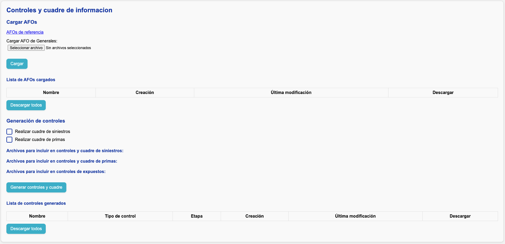
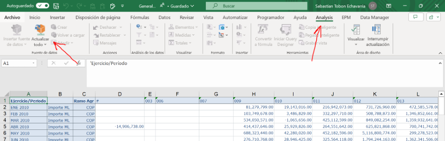
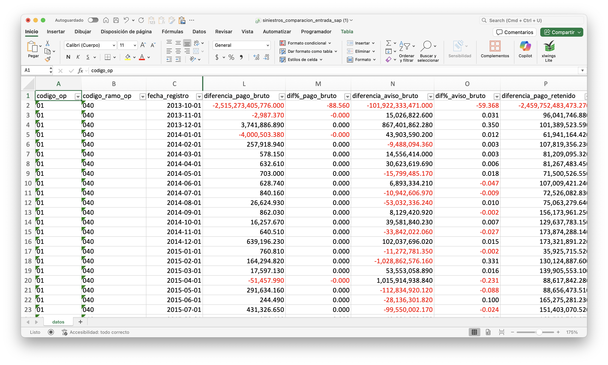
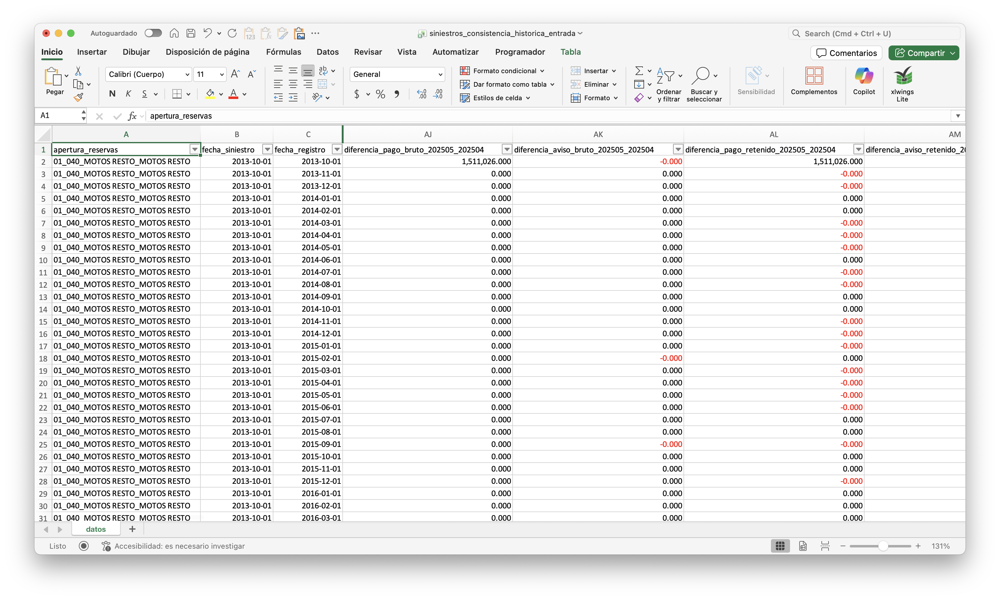
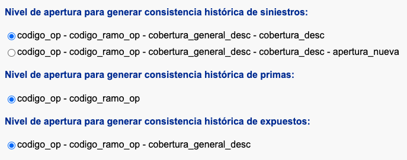
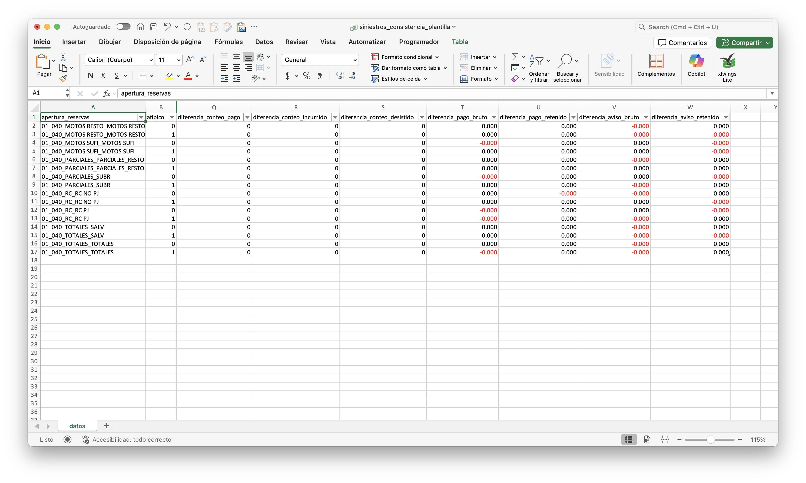
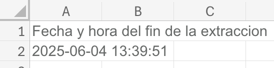

Generar controles de información y cuadrar contablemente
En la página de análisis encontrará la siguiente sección:

Los archivos AFOs
Los "AFOs" son archivos de Excel que, mediante el complemento Analysis For Office (AFO), muestran las cifras contables de cada mes para:
- Primas
- Pagos de siniestros
- Movimientos de reserva de aviso
Según las aperturas que haya definido en el archivo de segmentación, la aplicación le pedirá cargar los AFOs correspondientes.
AFOs de referencia
En este enlace encontrará los archivos AFO suministrados por Modelación Técnica para cada una de las compañías.
Actualización de AFOs
Si tiene instalado el complemento Analysis For Office, puede actualizar los AFOs manualmente usando las funciones mostradas en la siguiente imagen:

Cuadre contable
En la pantalla verá dos casillas de verificación (checkboxes) para indicar si desea realizar el cuadre contable de siniestros y primas. Si las activa, el sistema leerá y validará la parametrización de su archivo de segmentación.
Repartición de diferencias contables
En la parte inferior, bajo los títulos Archivos para incluir en controles y cuadre de siniestros, primas, y expuestos, debe seleccionar qué archivos (ya sea de extracción o carga manual) se compararán contra SAP.
El sistema calcula las diferencias a nivel de ramo-compañía y las reparte según las proporciones definidas en las hojas Cuadre_Siniestros y Cuadre_Primas del archivo de segmentación.
Info
Cada vez que extrae o carga un nuevo archivo de siniestros, primas, o expuestos, las listas de archivos disponibles se actualizan automáticamente.
Controles de información
Si activa el cuadre contable, los controles se ejecutan dos veces:
- Con la información antes del cuadre.
- Con la información después del cuadre.
Comparación entre las cifras de Teradata y SAP
Esta comparación solamente se realiza para primas y siniestros. Se compara cada cantidad en cada periodo contable a nivel de ramo-compañía (apertura máxima disponible desde SAP). La diferencia se calcula en valor absoluto y en porcentaje, tomando SAP como referencia.

Umbrales aceptados
Por defecto, el sistema alerta si detecta una diferencia mayor al 5% en alguna cifra para el mes de corte.
Nota
Este umbral puede variar según las características de cada negocio.
Consistencia histórica
El sistema compara la extracción actual contra la de meses anteriores, tanto para Teradata como para SAP, con el objetivo de detectar cambios relevantes en la información.
Para Teradata, la validación se realiza considerando:
- El nivel de aperturas seleccionado en la interfaz web
- El periodo de ocurrencia
- El periodo de movimiento
Esto permite identificar variaciones en los montos totales y cambios en las fechas de ocurrencia o movimiento.

Manejo de diferentes niveles de granularidad
Si los análisis históricos fueron generados con un nivel de aperturas distinto al actual, la interfaz mostrará opciones para definir cómo construir la evidencia.
Las reglas son:
- Si un análisis histórico tiene una granularidad menor (más agregado) que la seleccionada, no se incluye en la evidencia.
- Si tiene una granularidad mayor (más detallada), se agrupa al nivel seleccionado y sí se incluye.
Ejemplo
Supongamos que los análisis históricos se hicieron con las aperturas codigo_op - codigo_ramo_op - cobertura_general_desc - cobertura_desc, y en el análisis actual se agregó una nueva apertura para siniestros.
En este caso, la interfaz permitirá elegir entre distintos niveles de granularidad para generar la evidencia:

Consistencia entre información de entrada y la información que viaja a las plantillas
El sistema compara la información de los archivos finales de siniestros, primas, y expuestos con la información final que viaja a la plantilla.

Evidencias de extracción
El sistema guarda como evidencia del momento de extracción el archivo de segmentación utilizado, con una hoja extra que incluye la fecha y hora de generación de controles.
